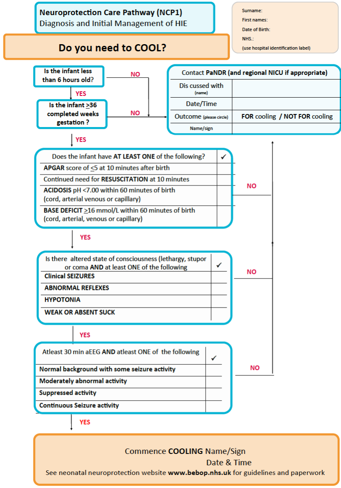

Identifying HIE#
Executive summary
Our challenge is that there has not been a clear, consistent consensus definition for HIE and neonatal encephalopathy (NE). The terms have often been used interchangeably (despite HIE actually being a sub-type of NE). The current recommendation is to first diagnose NE, and only diagnose HIE on the basis of sufficient evidence.
Steve Thornton highlighted that the findings of Kurinczuk et al. 2010, and Ellenberg and Nelson 2012 are very important. They suggest that HIE is identified based on the presence of sentinel event like uterine rupture, major placental abruption, or cord prolapse (and NOT features that are not specific to hypoxia ischaemia). However, it is worth being aware that 10-36% HIE cases have a recognised sentinel event (as on sentinel event page).
Other recent recommendations for defining (and thereby identifying/diagnosing/distinguishing HIE) are:
Neonatal Data Analysis Unit (required one of):
Diagnostic code for NE or HIE Diagnosis of NE or HIE (severe, moderate, grade 2 or grade 3)
OR Therapeutic hypothermia for 2 or more consecutive days
ACOG-AAP task force (more likely HIE with more of these factors):
Apgar-5 and Apgar-10 < 5
Umbilical artery pH <7 and/or base deficit >= 12mmol/L
Multiple organ dysfunction
Neuroimaging evidence
Presence of sentinel hypoxic or ischaemic event
Abnormal FHR
Spastic Quadriplegia or Dyskinetic Cerebral Palsy
Other causes ruled out
Criteria for therapeutic hypothermia (must meet all three):
One of:
Apgar-10 <=5
Continued need resuscitation at 10min
pH < 7
Base deficit >= 16mmol/L
Altered state of consciousness (lethargy, stupor, or coma) and one of:
Seizures
Abnormal reflexes
Hypotonia
Weak/absent suck
A 30min aEEG with abnormal, supressed or seizure activity
The DEFiNE group are currently working on research to establish consensus definition for NE.
Another option here is - instead of trying to get a diagnosis of HIE - you focus on things like admission to neonatal unit, low pH, resuscitation - and although this is no longer specific to HIE, it allows you to have a clear and defined endpoint, and could still be useful clinically.
Diagnosing HIE#
Challenge 1: Identifying cause#
Diagnosis of HIE or asphyxia is often over-utilised in practice and not clinically justified by the limited data at birth.[Chalak et al. 2019]
Identifying the precise causal pathway is often challenging. ‘Careful clinical phenotyping may help differentiation of NE by cause. This requires examination of the obstetric course and fetal monitoring records; careful and repeated neurological examination; early multichannel EEG or aEEG recordings of background brain activity; MRI and ultrasound brain imaging; and microbiological, biochemical and genetic analysis to rule out sepsis, inborn errors of metabolism, or epileptic encephalopathies, where indicated’.[DEFiNE - Molloy et al. 2023]
For HIE, it is also difficult to quantify the dose, duration and severity of hypoxia ischaemia. However, it is also important that a consensus definition is reached for mild HE, which has been variably defined. This is particular as the risk/benefit of providing therapeutic hypothermia to mild NE is not yet well characterised and trials are required.[DEFiNE - Molloy et al. 2023]
Initial diagnosis of NE#
‘It is difficult to prove the presence of cerebral hypoxic ischemia with the exception of well characterized animal models and particular cases of neonatal stroke.’ [Molloy and Bearer 2018] ‘As such, many prominent bodies, including the American Academy of Pediatrics and the British Association of Perinatal Medicine (BAPM), advocate for using NE until the exact aetiology is determined.’[COHESION - Quirke et al. 2013] This means that using descriptive terminology like NE is preferable in the newborn period, before workup and course are known, rather than an etiology-based definition like HIE, which implies a single known etiology.[DEFiNE - Molloy et al. 2023] Clinical categorization, such as NE caused by sepsis, genetic causes, stroke, or those with a multifocal origin is required to ensure targeted management where possible for non-HIE causes.[DEFiNE - Molloy et al. 2023]
Challenge 2: Defining HIE (and terminology)#
The definition for neonatal encephalopathy (as presented on the last page) does not does not specify subgroups, etiology, or guide management. This ambiguity has been criticised as hindering case definition, collaborative research, and data synthesis and confusing families and caregivers.[DEFiNE - Molloy et al. 2023]
Moreover, the terms “neonatal encephalopathy” and “hypoxic ischaemic encephalopathy” have often been used interchangeably, which is misleading, as HIE is actually a sub-group of NE. In practice, NE can occassionally be mistaked for HIE at birth. Also, congential neuromuscular disorders can be mistaken for NE (if they are disorders that involve abnormal tone,movements, and respiratory insufficiency).[DEFiNE - Molloy et al. 2023]
A systematic review of 67 RCTs from 1998 to 2022 found notable variation in terminology - 56/67 referred to HIE, whilst 16 referred to NE - and yet the most common inclusion criteria were not necessarily specific to HIE - Apgar scores, metabolic acidosis, reduced level of consciousness, reduced tone, and abnormal reflexes.[COHESION - Quirke et al. 2013]
Importance#
It is beneficial to understand the aetiology of NE. It can lead to the development of targeted adjunctive therapies related to the underlying mechanism and development of preventative strategies.[Chalak et al. 2019] ‘NE could be stratified by etiology. Subclassification and consensus definition will allow better collaboration and development of appropriate therapies for each subgroup, as a single “magic bullet” therapy is unlikely to treat all potential causes of NE.’[DEFiNE - Molloy et al. 2023]
It is also important when we might do harm by attributing a cause (e.g. hypoxia ischemia) to the disorder (encephalopathy).[Chalak et al. 2019]
Clear diagnosis is crucial for parents to help them to access accurate prognostic information and support.[DEFiNE - Molloy et al. 2023]
An early diagnosis is also crucial - as, for example, treatment with therapeutic hypothermia must be within the first six hours of injury for optimum benefit.[COHESION - Quirke et al. 2013]
Recommendations and precedent for diagnosing/identifying HIE#
Neonatal Data Analysis Unit and the Department of Health#
The Department of Health commissioned the Neonatal Data Analysis Unit (NDAU) at Imperial College London to extract data from the National Neonatal Research Database (NNRD) and to calculate annual rates for Brain injuries occurring during or soon after birth for England from 2010 to 2015. As part of this work, they had to develop a definition and methodology for identifying brain injury. The working definition is copied below (as well as on the prior page about definitions of NE & HIE).
This group definied brain injuries occurring during or soon after birth as followed:
Population - all babies admitted to a neonatal unit
Time period after birth - all brain injuries detected during neonatal unit stay
Conditions included -
Signs consistent with neonatal encephalopathy in term or near term infants (altered tone, altered consciousness, seizures)
Diagnosis of intracranial haemorrhage, perinatal stroke, hypoxic ischaemic encephalopathy (HIE), central nervous system infection, or kernicterus (bilirubin encephalopathy) in any infants
Preterm white matter disease (periventricular leukomalacia) in pre-term infants
Denominator - all live births
Exclusions - congenital encephalopathies (including inborn errors of metabolism), congenital infections, and congenital brain abnormalities
However, they found that data on signs of NE were not consistent over time - the fields used to define “altered tone” and “altered consciousness” only began from October 2010 onwards. Therefore, for this project, they dropped those and just looked for “seizures”.
Focus on HIE definition…
In the briefing paper circulated before their meeting, they note that the current definition used by Each Baby Counts (Royal College of Obstetricians and Gynaecologists national quality improvement programme) is:
Greater than or equal to 37 weeks gestation at birth
Any of the following diagnosis codes entered into Diagnosis at discharge field:
Severe Hypoxic Ischaemic Encephalopathy (HIE)
Severe Neonatal Encephalopathy
Grade 3 Hypoxic Ischaemic Encephalopathy (HIE)
OR meet one of the following criteria from daily variables, within first 7 days:
Decreased central tone and comatose and seizures
Received therapeutic hypothermia (cooling)
Receiving diagnosis (daily data variable) of severe (grade 3) Hypoxic Ischaemic Encephalopathy (HIE)
They note that defining HIE by treatment means:
It will include infants who do not develop detectable brain injury
It may discourage use of treatment in borderline cases
In the briefing paper, they offer some options of definitions to be considered, for HIE these were:
Daily variables observed within first 72 hours, and therapeutic hypothermia needs to be received for 3 consecutive days
The decision decided upon in their consensus meeting for HIE was:
Diagnosis of NE or HIE (severe, moderate, grade 2 or grade 3)
Therapeutic hypothermia for 2 or more consecutive days
Definition of HIE from the American College of Obstetrics, Gynecology, and Pediatrics (ACOG-AAP) Task Force#
The American Colleges of Obstetrics, Gynecology, and Pediatrics (ACOG-AAP) task force defined HIE as a restrospectively designated diagnosis - i.e. you start with a diagnosis of NE and then subsequency - based on accumulated evidence - subclassify it as HIE.
They make recommendations - although recognise that ‘knowledge gaps still preclude a definitive test or set of markers that accurately identifies, with high sensitivity and specificity, an infant in whom neonatal encephalopathy is attributable to an acute intrapartum event’.
Their latest recommended assessment for HIE is [American College of Obstetricians and Gynecologists’ Task Force on Neonatal Encephalopathy 2014]. Prior recommendations include that detailed in [Hankins and Speet 2003].
Neonatal encephalopathy#
Born at or beyond 35 weeks
Manifested by a subnormal level of consciousness or seizures, and often accompanied by difficulty with initiating and maintaining respiration and depression of tone and reflexes.
Attributing cause to hypoxia ischaemia: ‘In confirmed cases of neonatal encephalopathy, the following assessment will determine the likelihood that an acute peripartum or intrapartum event was a contributor. This list is based on the premise that neonatal encephalopathy that is due to acute hypoxia–ischemia will be accompanied by abnormal neonatal signs and be associated with contributing events in close temporal proximity to labor and delivery. The goal of the assessment is to compile a constellation of markers concerning neonatal status, contributing events, and developmental outcome to determine if they are consistent with acute hypoxia–ischemia and may not be explained by other etiologies. Thus, when more of the elements from each of the item categories are met, it becomes increasingly more likely that peripartum or intrapartum hypoxia–ischemia played a role in the pathogenesis of neonatal encephalopathy.’
[American College of Obstetricians and Gynecologists’ Task Force on Neonatal Encephalopathy 2014]
Neonatal signs consistent with hypoxia-ischaemia#
Apgar-5 and Apgar-10 less than 5 (and unlikely if Apgar-5 greater than or equal to 7)
Fetal umbilical artery pH less than 7 and/or base deficit greater than or equal to 12 mmol/L (and unlikely if pH >7.20)
Neuroimaging evidence of acute brain injury with MRI or magnetic resonance spectroscopy, consistent with hypoxia ischaemia
Multiple organ dysfunction
[American College of Obstetricians and Gynecologists’ Task Force on Neonatal Encephalopathy 2014]
Type and timing of contributing factors that are consistent with hypoxia-ischaemia#
Sential hypoxic or ischaemic event just before or during labour and delivery (A ruptured uterus Severe abruptio placentae Umbilical cord prolapse Amniotic fluid embolus with coincident severe and prolonged maternal hypotension and hypoxemia Maternal cardiovascular collapse Fetal exsanguination from either vasa previa or massive fetomaternal hemorrhage)
Fetal heart rate (FHR) patterns consistent with hypoxia ischaemia - (a) category II fetal heart rate pattern lasting 60 minutes or more that was identified on initial presentation with persistently minimal or absent variability and lacking accelerations, even in the absence of decelerations (b) Category I fetal heart rate pattern that converts to Category III (c) Additional fetal heart rate patterns that develop after a Category I fetal heart rate pattern on presentation, which may suggest intrapartum timing of a hypoxic–ischemic event, include tachycardia with recurrent decelerations and persistent minimal variability with recurrent decelerations
Neuroimaging evidence on timing and type of brain injury patterns - e.g. there are several well-defined patterns of brain injury and their evolution on MRI that are typical of hypoxic–ischemic cerebral injury in the newborn, including deep nuclear gray matter or watershed cortical injury. If a different pattern of brain injury or evolution of injury exists on MRI, then alternative diagnoses should be actively pursued (eg, metabolic and genetic investigations).
No evidence of other proximal or distal factors that could be contributing - in the presence of other significant risk factors—such as abnormal fetal growth, maternal infection, fetomaternal hemorrhage, neonatal sepsis, and chronic placental lesions—an acute intrapartum event as the sole underlying pathogenesis of neonatal encephalopathy becomes much less likely.
Spastic Quadriplegia or Dyskinetic Cerebral Palsy - other subtypes of cerebral palsy are less likely to be associated with acute intrapartum hypoxic–ischemic events - and other developmental abnormalities may occur, but they are not specific to acute intrapartum hypoxic–ischemic encephalopathy and may arise from a variety of other causes
[American College of Obstetricians and Gynecologists’ Task Force on Neonatal Encephalopathy 2014]
Caveat#
This definition may exclude some cases of HIE due to factors like:
Milder acidosis
Higher Apgar scores
Non-classical patterns of injury on MRI
Progressive, subacute evolution of HIE
Incomplete data, such as outcomes that do not include severe motor deficit
Incomplete data collection[DEFiNE - Molloy et al. 2023]
Criteria for therapeutic hypothermia#
These are detailed more on the therapeutic hypothermia page, but the image below is the criteria for cooling, copied from the NHS East of England Guidelines for Management of Infants with Suspected HIE.

Kurinczuk et al. 2010, and Ellenberg and Nelson 2012#
Kurinczuk et al. 2010 wrote a best practice guideline on epidemiology of neonatal encephalopathy and hypoxic–ischaemic encephalopathy. Ellenberg and Nelson 2012 conducted a review of studies on intrapartum risks of cerebral palsy.
Kurinczuk et al. 2010 state - with reference to the ACOP-AAP 2002 - that HIE should just be used to define a sub-set of cases of NE where there is evidence of a recent, usually intrapartum, hypoxic ischaemic cause of the NE.[Kurinczuk et al. 2010] This refers to the occurence of sentinel events like uterine rupture, major placental abruption, or cord prolapse.[Ellenberg and Nelson 2012]
Typically, the presence of indirect clinical markers alongside features of encephalopathy are used to imply occurence of hypoxia ischaemia. However, they argue that you should use NEITHER of these - so NOT…
Findings that could result from a variety of etiologic factors like abnormal fetal heart rate or meconium in the amniotic fluid.
Signs of brain injury itself (seizures, encephalopathy)
The former is in the context of stating that seizures or encephalopathy are evidence that hypoxia-ischaemia occurred and was the cause. This is because uses those features in that way produces a tautological situation due to circular reasoning - that (a) presence of injury is marker that intrapartum complications occurred, and (b) presence of injury is the consequence of those complications - and so, it reaffirms the assumed connections between intrapartum events and NE, since the features were used to identify cases and to define NE. These signs of brain injury are clinical features, and don’t reflect the underlying cause as being hypoxia.
The DEFiNE group#
‘An international evidence-based consensus is required to define NE, classify the subgroups, and their diagnostic criteria.’ The DEFiNE group has ‘developed a protocol for a consensus definition of NE. The evidence synthesis has started with a systematic review of definitions of NE used in randomized controlled trials involving patients with NE. This has revealed a huge disparity between, and little consensus on, definitions of NE. The next stage is to complete a protocol for a study to develop an international and multidisciplinary consensus definition using a modified Delphi consensus approach. The Delphi approach is an iterative process with repeated rounds of evaluation and voting to help determine consensus among a group of experts and parents with different levels of knowledge and expertise. We will use an online real-time Delphi approach to arrive at a consensus definition.’[DEFiNE - Molloy et al. 2023]